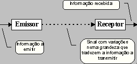

Codecs
A palavra "Codec" vem de COdificação e DECodificação, ou seja, eles "traduzem" um arquivo que originalmente seria muito grande pra ser compartilhado/executado em conteúdo bem menos pesado. Aquele filme que ocuparia seu disco rígido inteiro ou demoraria dias pra ser baixado pode ser comprimido em um MPEG-2 ou um Windows Media Video.
Os Codecs pegam um arquivo grande e comprimem os elementos que fazem parte do mesmo - audio e video - em um formato menor, capaz de ser codificado e decodificado a partir de softwares específicos para isso, a exemplo do iTunes, Windows Media Player, Quicktime, Real Player, entre outros. Eles rearranjam o fluxo de bits para determinar coisas como largura e altura de imagens, velocidade de exibição, entre outras. Assim, aquele filme que precisaria de 500 GB teria agora um tamanho bem mais adequado, como 700 MB.
A diferença entre os Codecs está em como seus elementos são comprimidos ou descomprimidos. Por exemplo, uns apenas "resumem" ao máximo o tipo de conteúdo que não precisa da qualidade máxima; outros fazem isso com o mínimo de perdas possível e alguns variam de acordo com a necessidade, como nos momentos de silêncio de um filme, que não necessitam de compressão de som.
Transmissão de Dados
A transmissão de dados ou informação consiste na utilização de um suporte de informação para a transportar entre dois pontos fisicamente distantes.
Um método sempre possível é guardar a informação num suporte físico amovível do tipo magnético ou óptico e transportar fisicamente esse suporte para o ponto de destino.
A alternativa mais cómoda é utilizar um suporte que se encarregue ele próprio do transporte. Para o efeito utiliza-se um fenómeno físico capaz de se propagar desde a origem até destino, este tipo de suporte será designado por sinal.
Como fenómeno físico que é, um sinal possui diversas grandezas físicas mesuráveis. Se o emissor produzir variações nestas grandezas de modo a traduzir a informação a transmitir, então o receptor pode detectar estas variações e obter a informação que foi transmitida.
 Fonte: http://www.dei.isep.ipp.pt/~andre/imagens/txdata01.gif